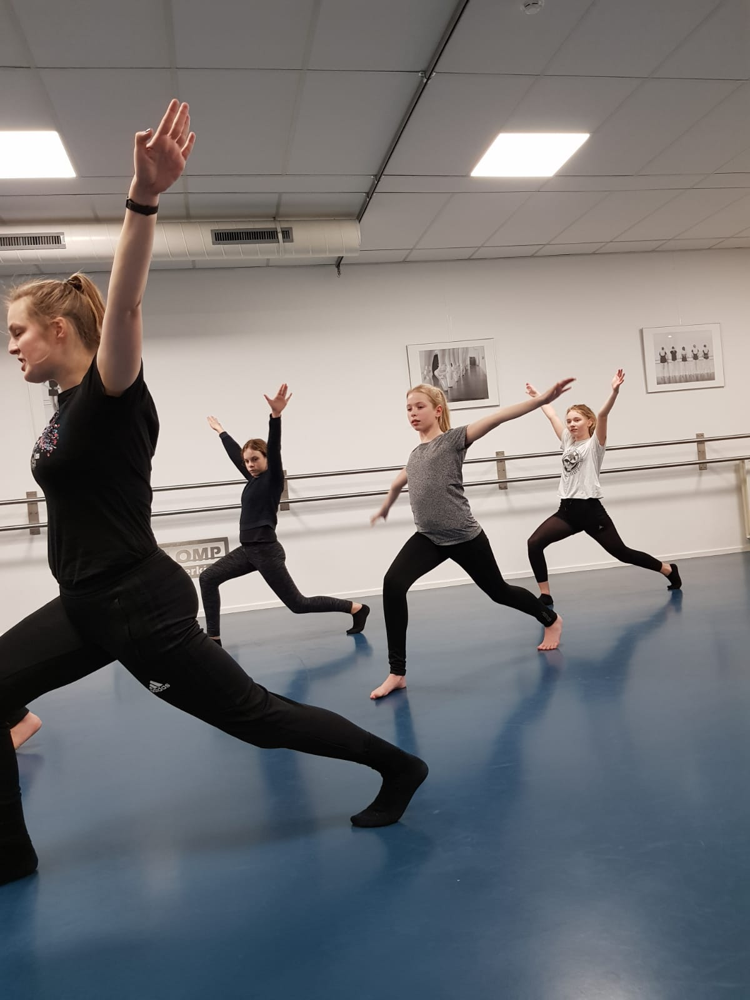
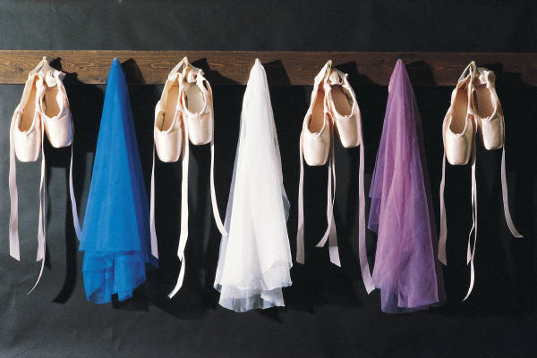

Start seizoen 2023-2024
 Na de zomer weer lekker dansen?
Aanmeldformulier voor seizoen 2023-2024 : inschrijfformulier
Rooster seizoen 23-24:
Na de zomer weer lekker dansen?
Aanmeldformulier voor seizoen 2023-2024 : inschrijfformulier
Rooster seizoen 23-24:
Workshop-Dansweek
 Kom meedoen in de gratis Workshop-dansweek van 28 aug t/m 1 sept
Rooster Workshop-Dansweek: 28-8 t/m 1-9
Maandag 28 augustus:
16:00 workshop Jazzballet va 9 jaar
17:00 workshop Jazzballet va 11 jaar
18:00 workshop Ballet va niv 2
19:00 workshop Modern gevord. volw.
20:00 workshop Jazzballet interm. volw.
Dinsdag 29 augustus:
16:30 workshop Ballet 13+ intermed.
17:30 workshop Ballet 16+ gevord.
19:30 workshop Ballet volw Beg.
20:30 workshop Ballet volw. Interm.
Woensdag 30 augustus:
13:45 workshop Kleuterballet 4-5 jaar
14:30 workshop Kinderballet 6-7 jaar
15:30 workshop Kinderballet 7-8 jaar
16:30 workshop Kinderballet 8-9 jaar
17:30 workshop Ballet va 9 jr niv 1
18:30 workshop Ballet va 11 jr niv 2/3
19:30 workshop Ballet volw. Interm.
20:30 workshop Werelddans/Folklore volw. beg.
Donderdag 31 augustus:
16:00 workshop Modern va 9 jaar
17:00 workshop Jazzballet va 14 jaar
20:00 workshop Ballet volw. gevord.
Vrijdag 1 september:
14:00 workshop Kleuterballet 4-5 jaar
14:45 workshop Kinderballet 6-8 jaar
15:45 workshop Kinderballet 8-9 jaar
19:45 workshop Ballet volw. gevord.
20:15 workshop Sevillanas dans.
Presentaties 2024
 In het nieuwe dansseizoen staan natuurlijk de lessen weer centraal maar organiseren we ook een Open Podium waar leerlingen hun eigen werk kunnen tonen.
Op zaterdag 16 december presenteren we een mini voorstelling WINTER in Theater de KiK dus zet de datum alvast in de agenda!
In het nieuwe dansseizoen staan natuurlijk de lessen weer centraal maar organiseren we ook een Open Podium waar leerlingen hun eigen werk kunnen tonen.
Op zaterdag 16 december presenteren we een mini voorstelling WINTER in Theater de KiK dus zet de datum alvast in de agenda!
Paardenmarkt Elst
 Op maandag 4 september staat Elst in het teken van de Paardenmarkt, wij zijn dan gesloten, er zijn dan geen lessen.
Open Dag
.jpg) Zondag 10 september is er weer een gezellige Open Dag in samenwerking met de Muziekschool All Music en Theater de KiK.
Tijdens deze dag kun je genieten van workshops, presentaties en open lessen bekijken. Het programma volgt eind augustus.
Zondag 10 september is er weer een gezellige Open Dag in samenwerking met de Muziekschool All Music en Theater de KiK.
Tijdens deze dag kun je genieten van workshops, presentaties en open lessen bekijken. Het programma volgt eind augustus.
Ballet Spelletje Balletris
 Typ deze code in op je toetsenbord: ⬆⬆⬇⬇⬅➡⬅➡ ba
Typ deze code in op je toetsenbord: ⬆⬆⬇⬇⬅➡⬅➡ ba